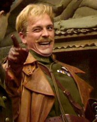

|  | Matthews twitter
Husband, Father, and Software Tester This is a brief history of who I am and what I am all about. I am Married and have two wonderful children. |
| Year | Achievemet😁 | Difficulty😆 |
|---|---|---|
| 2013 | London to Newcastle 24 hour ride | ⭐⭐⭐⭐⭐ |
| 2014 | 50 Mile TT | ⭐⭐⭐⭐⭐ |